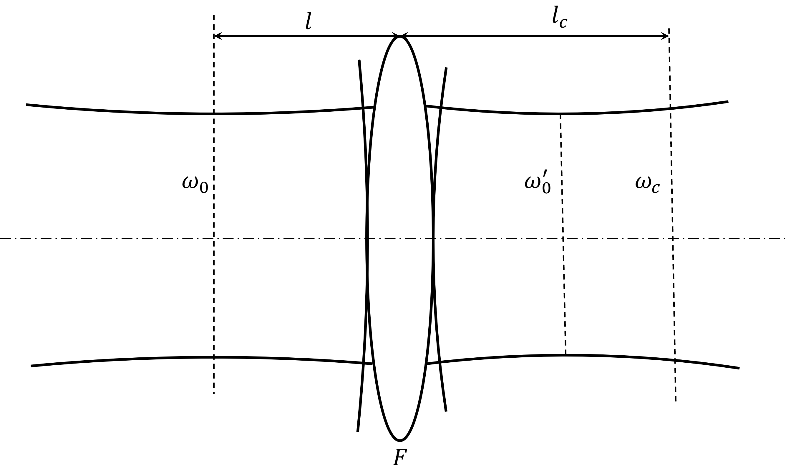

各向同性（物质方程适用）、无电荷分布（\(\rho=0\)）的介质中，Maxwell方程组的微分形式为：
$$\begin{cases} \nabla\cdot(\epsilon \boldsymbol{E}) = 0\\ \nabla\times\boldsymbol{E} = -\mu\frac{\partial\boldsymbol{H}}{\partial t}\\ \nabla\times\boldsymbol{H} = \epsilon \frac{\partial \boldsymbol{E}}{\partial t} \end{cases}$$此处只考虑电场与物质相互作用的情况，不考虑磁场与物质相互作用（非常微弱、忽略不计）的情况.
由此可得波动方程（亥姆霍兹方程）：
$$\mu\epsilon \frac{\partial^2\boldsymbol{E}}{\partial t^2} = \nabla^2\boldsymbol{E}$$怎么推导的？（旋度）
稳定球面腔中产生的激光束是高斯光束（Gauss球面波）.
[注]Gauss光束既不是均匀平面波，也不是均匀球面波.
考虑波数表示为：\(k^2(r) = k_0^2 - k_0k_2r^2,~k_0,k_2\in\mathbb{Z}\)
类透镜介质的折射率公式：
令\(n_0 = \frac{\lambda}{2\pi}k_0\)，表示轴线上介质的折射率.
$$\therefore n(r) = n_0(1 - \frac{k_2}{2k_0}r^2)$$类透镜介质中传播的是一种近似平面波.
近似平面波的表达式为：
$$E = \phi(x,y,z)e^{-ikz}$$其中\(\phi(x,y,z)\)为修正因子，包含了相位修正与振幅修正两部分，并满足慢变近似.
代入波动方程得：
$$\nabla^2\phi - 2ik\phi' -kk_2\phi r^2 = 0$$令
$$\phi = E_0\exp\left\{-i\left[p(z) + \frac{k}{2q(z)}r^2\right]\right\}$$代入波动方程得：
$$-\left[\frac{k}{q(z)}\right]^2r^2 - 2i\left[\frac{k}{q(z)}\right] - k^2\left[\frac{1}{q(z)}\right]'r^2 - 2kp' -kk_2r^2 = 0$$由于方程对任意\(r\)均成立，因此\(r\)的不同次幂的系数均为\(0\)，则：
$$\left\{\left[\frac{k}{q(z)}\right]^2 + k^2\left[\frac{1}{q(z)}\right]' + kk_2\right\}r^2 + 2i\left[\frac{k}{q(z)}\right] + 2kp' = 0$$对于\(r^2\)项：
$$\left[\frac{k}{q(z)}\right]^2 + k^2\left[\frac{1}{q(z)}\right]' + kk_2 = 0 \Rightarrow \left[\frac{1}{q(z)}\right]^2 + \left[\frac{1}{q(z)}\right]' + \frac{k_2}{k} = 0$$对于\(r^0\)项：
$$2i\left[\frac{k}{q(z)}\right] + 2kp' = 0 \Rightarrow \therefore p'(z) = -\frac{i}{q(z)}$$ 类透镜介质中的简化波动方程： $$\begin{cases} \left[\frac{1}{q(z)}\right]^2 + \left[\frac{1}{q(z)}\right]' + \frac{k_2}{k} = 0\\ p'(z) = -\frac{i}{q(z)} \end{cases}$$第一个方程可以求出\(q(z)\).
第二个方程可以求出\(p(z)\).
由\(q(z)\)与\(p(z)\)可以求出\(\phi\).
均匀介质可以视为\(k_2 = 0\)时的类透镜介质.
因此，均匀介质中求解简化波动方程，得：
\(C_1\)不影响振幅与相位的分布，不妨设\(C_1 = 0\).
$$\therefore p(z) = -i\ln(1 + \frac{z}{q_0})$$带入\(\phi\)，得：
$$\begin{align} \phi &= E_0\exp\left\{-i\left[p(z) + \frac{k}{2q(z)}r^2\right]\right\}\\ &= E_0\exp\left\{-i\left[-i\ln(1 + \frac{z}{q_0}) + \frac{k}{2(z+q_0)}r^2\right]\right\} \end{align}$$设：
$$q_0 = i\frac{\pi\omega_0^2\eta}{\lambda}$$人为定义以下参数：
$$\omega^2(z) = \omega_0^2\left[1+\left(\frac{\lambda z}{\pi\omega_0^2\eta}\right)^2\right] = \omega_0^2(1 + \frac{z^2}{z_0^2})$$ $$\kappa(z) = \tan^{-1}\left(\frac{\lambda z}{\pi\omega_0^2\eta}\right) = \tan^{-1}\left(\frac{z}{z_0}\right)$$在准直距离内，高斯光束可以近似认为是平行的.
均匀介质中波动方程的一个解.
$$\begin{align} E(x,y,z) &= \phi(x,y,z)e^{-ikz}\\ &= \left\{E_0\frac{\omega_0}{\omega(z)}\exp\left[-\frac{r^2}{\omega^2(z)}\right]\right\}\exp\left\{-i\left[kz-\kappa(z)+\frac{kr^2}{2R(z)}\right]\right\} \end{align}$$前一项为振幅项，后一项为相位项.
基本高斯光束的振幅为：
$$|\boldsymbol{E}| = E_0\frac{\omega_0}{\omega(z)}\exp\left[-\frac{r^2}{\omega^2(z)}\right]$$\(z\)为定值时，振幅随\(r\)按\(\mu = 0\)的高斯函数规律变化.
最大振幅由高斯函数，在光轴上具有最大的振幅.
$$|\boldsymbol{E}|_{max} = E_0\frac{\omega_0}{\omega(z)}$$ 光斑半径\(z\)截面内，振幅下降到最大值的\(1/e\)时的离轴距离\(r\).
$$r=\omega(z)$$ $$\because \omega^2(z) = \omega_0^2(1 + \frac{z^2}{z_0^2})$$ $$\therefore \frac{\omega^2(z)}{\omega_0^2} - \frac{z^2}{z_0^2} = 1$$即光斑半径随传播距离的变化规律为双曲线.
\(z=0\)时\(\omega(z)\)有最小值\(\omega_0\)，\(z=0\)的位置称为高斯光束的束腰位置，\(\omega_0\)称为高斯光束的束腰半径.
基本高斯光束的相移特性由相位因子决定：
$$\Phi(r,z) = k\left[z + \frac{r^2}{2R(z)}\right] - \tan^{-1}\kappa (z)$$将高斯光束在传输过程中的总相移与标准球面波的总相移比较.
均匀球面波的等相位面曲率中心是一个固定的点，故等相位面是一系列同心球面.
高斯光束的等相位面曲率中心不是固定点，随光束传播而移动.
$$R(z) = z\left[1 + \left(\frac{\pi\omega_0^2\eta}{\lambda z}\right)^2\right] = z\left(1 + \frac{z_0^2}{z^2}\right)$$| $$z$$ | $$R(z)$$ | 描述 |
| $$z=0$$ | $$R(z)\rightarrow \infty$$ | 束腰处，等相位面为平面. |
| $$z\rightarrow \infty$$ | $$R(z)\approx z \rightarrow \infty$$ | 离束腰无限远处，等相位面为平面，且曲率半径中心位于束腰处. |
| $$z = \pm z_0$$ | $$R_{\min}(z) = 2z_0$$ | \(z=z_0\)处，等相位面曲率半径最小. |
| $$z\gg z_0$$ | $$R(z) \approx z$$ | 远场处的高斯光束可以看作为一个由\(z=0\)发出，半径为\(z\)的球面波. |
考虑开孔半径为\(a\)的圆孔，高斯光束通过半径为\(a\)的圆孔的功率\(P_a\)与总功率\(P_\infty\)之比为：
$$T = \frac{\int_{0}^a\int_0^{2\pi}I(r)2\pi r\mathrm{d}r\mathrm{d}\theta}{\int_{0}^\infty\int_0^{2\pi}I(r)2\pi r\mathrm{d}r\mathrm{d}\theta} = 1 - \exp\left(-\frac{2a^2}{\omega^2}\right)$$功率的公式为什么是这个
| 孔径半径\(a\) | \(1.5\omega\) | \(2\omega\) |
| 功率透过比\(\%\) | \(98.89\) | \(99.99\) |
瑞利范围外，高斯光束迅速发散，用远场发散角表征这一特性.
高斯光束远场发散角\(\theta\)（半角）一般定义为：\(z\rightarrow\infty\)（远场时）高斯光束振幅减小到中心最大值的\(1/e\)处与\(z\)轴的夹角.
实际上就是双曲线过原点的渐近线与\(z\)轴的夹角.
$$\theta_{1/e} = \lim{\frac{\omega(z)}{z}} = \frac{\lambda}{\pi \omega_0} = \sqrt{\frac{\lambda}{\pi f}}$$包含在发散全角\(2\theta_{1/e}\)范围内的功率占高斯光束基模光束总功率的\(86.5\%\).
考虑方位角的变化，即\(\frac{\partial}{\partial \phi}\neq 0\)，则：
$$\nabla^2 = \left[\left(\frac{\partial^2}{\partial r^2} + \frac{1}{r}\frac{\partial}{\partial \phi}\right)\right] + \frac{\partial^2}{\partial z^2}$$设波动方程的特解为：
$$E(x,y,z) = \alpha\left(\frac{\sqrt{2}x}{\omega}\right)\beta\left(\frac{\sqrt{2}y}{\omega}\right)\phi(x,y,z)e^{-ikz}$$解得：
$$\begin{cases} \alpha\left(\frac{\sqrt{2}x}{\omega}\right) = H_m\left(\frac{x}{\omega}\right)\\ \beta\left(\frac{\sqrt{2}y}{\omega}\right) = H_n\left(\frac{y}{\omega}\right)\\ \end{cases}$$其中，\(H_m\)与\(H_n\)分别是\(m\)次与\(n\)次的厄米多项式.
最初几项厄米多项式为：
$$\begin{cases} H_0(x) = 1\\ H_1(x) = 2x\\ H_2(x) = 4x^2 - 2\\ H_3(x) = 8x^3 - 12x \end{cases}$$最终求得：
$$E_{m,n}(x,y,z) = E_0\frac{\omega_0}{\omega(z)}H_m\left[\sqrt{2}\frac{x}{\omega(z)}\right]H_n\left[\sqrt{2}\frac{y}{\omega(z)}\right]\exp\left\{-\frac{x^2+y^2}{\omega^2(z)} - i\left[\frac{k(x^2+y^2)}{2R(z)} + kz + (m+n+1)\kappa(z)\right]\right\}$$为什么这里的\(\kappa(z)\)前是正号，我觉得应该是负号，这样\(m=n=0\)的时候才符合基模高斯光束解的情况.
这个东西不知道有什么意义，没写完.
1、用参数\(\omega_0\)（或\(z_0\)）及束腰位置表征高斯光束.
2、用参数\(\omega(z)\)与\(R(z)\)表征高斯光束.
3、\(q\)参数
高斯光束在一段类透镜介质中传输一段距离后的光束参数\(q_2\)与入射介质处的参数\(q_1\)存在以下关系：
$$q_2 = \frac{Aq_1 + B}{Cq_1 + D}$$对于长度为\(L\)的一段均匀介质：
$$q_2 = \frac{1\cdot q_1 + L}{0\cdot q_1 + 1} = q_1 + L$$薄透镜：
$$q_2 = \frac{1\cdot q_1 + 0}{-\frac{1}{f}\cdot q_1 + 1} = \frac{fq_1}{f-q_1}$$已知：入射高斯光束腰斑半径为\(\omega_0\)，束腰与透镜的距离为\(l\)，透镜的焦距为\(F\).
求：通过透镜后在与透镜相距\(l_c\)处的高斯光束参数\(\omega\)和\(R\).

| \(q\)参数 | |
| 入射高斯光束束腰处 | $$q_0 = i\frac{\pi \omega_0^2}{\lambda}$$ |
| 出射高斯光束\(c\)处 | $$\frac{1}{q_c} = \frac{1}{R_c} - i\frac{\lambda}{\pi\omega_c^2}$$ |
从\(q_0\)到\(q_c\)经历了三个过程：
光学变换矩阵：
上下同乘\(F\)，得：
$$q_c = \frac{\left(F - l_c\right)\left(\frac{\pi\omega_0^2}{\lambda}\right)i + F^2 - (F-l)(F-l_c)}{-\left(\frac{\pi\omega_0^2}{\lambda}\right)i + F - l}$$上下同乘\((F-l) + \left(\frac{\pi\omega_0^2}{\lambda}\right)i\)，得：
$$\begin{align} q_c &= \frac{-(F-l_c)\left(\frac{\pi\omega_0^2}{\lambda}\right) + (F-l)[F^2 - (F-l)(F-l_c)]}{(F-l)^2 + \left(\frac{\pi\omega_0^2}{\lambda}\right)^2} + \frac{(F-l)(F-l_c)\left(\frac{\pi\omega_0^2}{\lambda}\right)i + [F^2 - (F-l)(F-l_c)]\left(\frac{\pi\omega_0^2}{\lambda}\right)i}{(F-l)^2 + \left(\frac{\pi\omega_0^2}{\lambda}\right)^2}\\ &= \frac{-(F-l_c)\left(\frac{\pi\omega_0^2}{\lambda}\right) + F^2(F-l) - (F-l_c)(F-l)^2}{(F-l)^2 + \left(\frac{\pi\omega_0^2}{\lambda}\right)^2} + i\frac{F^2\left(\frac{\pi\omega_0^2}{\lambda}\right)}{(F-l)^2 + \left(\frac{\pi\omega_0^2}{\lambda}\right)^2}\\ &= l_c - F + \frac{F^2(F-l)}{(F-l^2) + \left(\frac{\pi\omega_0^2}{\lambda}\right)^2} + i\frac{F^2\left(\frac{\pi\omega_0^2}{\lambda}\right)}{(F-l)^2 + \left(\frac{\pi\omega_0^2}{\lambda}\right)^2} \end{align}$$此时令\(c\)点取在像方束腰上，则：
$$\begin{cases} l_c = l'\\ \omega_c = \omega' \end{cases}$$由高斯光束的束腰特点，有：
$$R_c\rightarrow\infty$$缩小光斑半径，将激光束聚焦成极小的光斑，从而得到极高的功率密度与空间分辨率.
实践过程中，通常需要把一个激光器谐振腔所产生的高斯光束，注入到另一个谐振腔或其他光学系统中.这就涉及到了高斯光束匹配的问题.
一般来讲，高斯光束注入的光学系统相当于一个稳定腔，具有确定的本征模式.
不匹配的缺点当一个谐振腔产生的单模高斯光束入射到另一个谐振腔内时，在两腔之间适当位置插入一个适当焦距的单透镜.
为什么插一个透镜就能光束匹配了？
高斯光束的模的概念是什么？
怎么判断两个高斯光束的模一致？
两边同乘\(\omega_0'\)，得：
$$1 = \frac{l'-F}{l-F}\cdot\frac{(F-l)^2}{F^2} + \frac{1}{F^2}\left(\frac{\pi\omega_0\omega_0'}{\lambda}\right)^2$$ $$F^2 = (l'-F)(l-F) + \left(\frac{\pi\omega_0\omega_0'}{\lambda}\right)^2$$令\(f_0 = \left(\frac{\pi\omega_0\omega_0'}{\lambda}\right)^2\)，则：
$$F^2 - f_0^2 = (l'-F)(l-F)$$ $$又\because \frac{\omega_0'^2}{\omega_0^2} = \frac{l'-F}{l - F}$$ $$\therefore\begin{cases} l'-F = \pm\frac{\omega_0'}{\omega_0}\sqrt{F^2 - f_0^2}\\ l-F = \pm\frac{\omega_0}{\omega_0'}\sqrt{F^2 - f_0^2} \end{cases}$$ case 1给定一个焦距为\(F\)的透镜：
此时可以解出一组\(l,l'\).
求出实数解的条件为：
$$F\geq f_0$$ case 2两个腔的相对位置固定：
$$l_0 = l + l'$$两式相加即可解出\(F\).
再代回两式即可解出\(l,l'\).
高斯光束通过透镜后，参数\(\omega_0\)或\(f\)不发生改变.
即高斯光束的结构不发生改变，仅光束束腰位置沿光轴平移一段距离.
$$\begin{cases} \omega_0' = \omega_0\\ l'=l \end{cases}$$由高斯光束束腰传播规律，有：
$$\frac{1}{\omega_0'^2} = \frac{1}{\omega_0^2}\left(1 - \frac{l}{F}\right)^2 + \frac{1}{F^2}\left(\frac{\pi\omega_0}{\lambda}\right)^2$$ $$\because \omega_0' = \omega_0$$ $$\therefore \frac{1}{\omega_0^2}\left[1 - \left(1 - \frac{l}{F}\right)^2\right] = \frac{1}{F^2}\left(\frac{\pi\omega_0}{\lambda}\right)^2$$ $$\therefore \frac{1}{\omega_0^2}\frac{l}{F}\left(2 - \frac{l}{F}\right) = \frac{1}{F^2}\left(\frac{\pi\omega_0}{\lambda}\right)^2$$ $$\therefore \frac{1}{\omega_0^2}\left(2Fl - l^2\right) = \left(\frac{\pi\omega_0}{\lambda}\right)^2$$ $$2Fl = \left(\frac{\pi\omega_0^2}{\lambda}\right)^2 + l^2$$ $$\begin{align} F &= \frac{1}{2l}\cdot l^2\left[1 + \left(\frac{\pi\omega_0^2}{\lambda l}\right)^2\right]\\ &= \frac{1}{2}l\left[1 + \left(\frac{\pi\omega_0^2}{\lambda l}\right)^2\right] \end{align}$$ $$R(z) = z\left[1 + \left(\frac{\pi\omega_0^2\eta}{\lambda z}\right)^2\right]$$ $$\begin{align}\because z &= l\\ \eta &= 1 \end{align}$$ $$\therefore R(l) = l\left[1 + \left(\frac{\pi\omega_0^2}{\lambda l}\right)^2\right]$$ $$\therefore F = \frac{1}{2}R$$当透镜焦距为入射高斯光束再透镜表面的波面曲率半径的一半时，透镜对高斯光束做自再现变换.
曲率半径为\(R\)的球面反射镜对近轴光线的反射变换与焦距为\(R/2\)的薄透镜对统一近轴光电的变换等效.
当入射在球面镜的高斯光束波前曲率半径正好等于球面镜曲率半径时，反射后高斯光束将不发生任何变化，即物方高斯光束与像方高斯光束完全重合.
用于描述实际光束偏离基模高斯光束的程度.
通常情况下，有：
$$M^2 \geq 1$$[注]也存在\(M^2 \lt 1\)的情况.
对于基模高斯光束：
$$\omega_0\theta = \frac{\lambda}{\pi}$$ $$\therefore M^2 = \frac{\pi\omega_{R0}\theta_R}{\lambda}$$